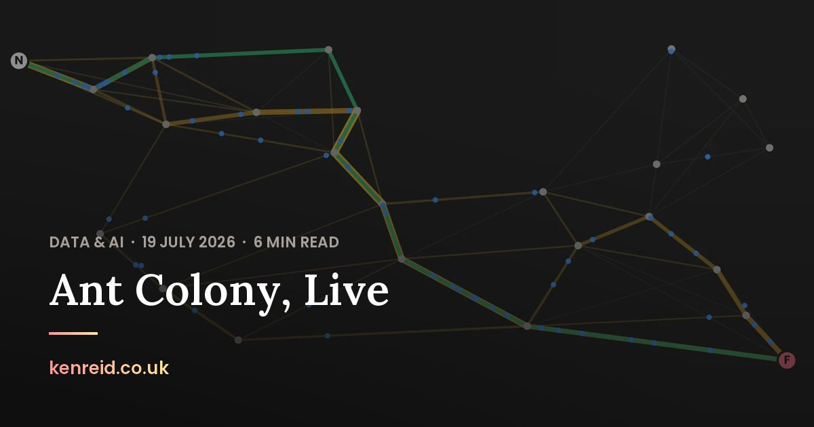
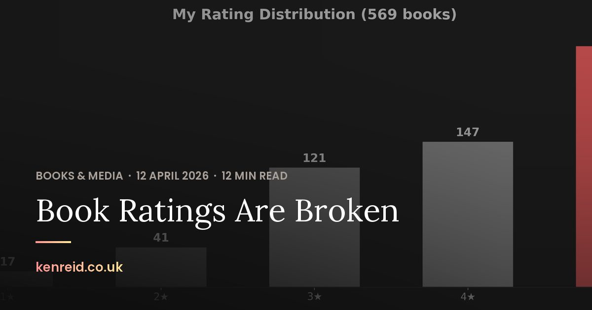
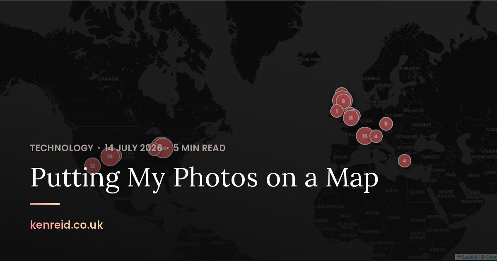

Technology · · 10 min read
Share Cards Drawn by a Script
A Python script draws the preview picture for every post on this site, here's how it's done, and the testing to make sure I stay compliant with my own rules!
Photograph © Ken Reid
Share Cards Drawn by a Script
It took me a long time to understand how sharing to social media sites worked. I thought it was largely driven by them, and that I had no control over what they sourced for the image, because I'd share a blog about data science and a picture of Kwee would appear in the socials (???).
Kwee is a very fluffy grey cat and has nothing to do with data science portfolios (as far as I'm aware, I don't keep an eye on him all day).
This post covers the script I wrote to replace all of that, generate_og_images.py, which draws a card for every post with Pillow, and the manifest that lets CI tell when a card is out of date without drawing. Part of the series on how this site is built.
Quick jargon guide
- Share card: the picture a chat app or social site shows under a link you paste.
- Open Graph: the meta tags (
og:title,og:imageand friends) that tell those sites what to show. Facebook created it. - Pillow: the Python library for opening, drawing on and saving pictures.
- Variable font: one font file that holds a whole range of weights, picked with a number. Lora runs from 400 to 700.
- woff2: the compressed font format browsers download.
- Hash: a short fingerprint of some input. Change one letter of the input and the fingerprint changes completely.
- CI: the checks GitHub runs on every push, which turn red when something is wrong.
What goes on a card
I've since learned a lot about this topic. The Open Graph protocol asks for four things on every page, and one of them is og:image: "An image URL which should represent your object within the graph."[1] Facebook's own guidance is at least 1200 by 630 pixels, as close to 1.91:1 as you can get so nothing is cropped in the feed[2]. So every post now gets img/og/<slug>.jpg at 1200 by 630. Each card copies the post's opener, the big photograph at the top of every post. It's the same photo cropped to fill the frame, under a dark scrim that's heavier at the bottom and on the left where the text sits. Then, from the bottom up, come the site name in the brand gradient, a short gradient rule, the title in Lora, and the kicker (category, date, read time) in capitals.
-
Behind the type
- Photograph cropped to fill 1200 by 630 The opener's photograph, scaled until it covers the whole card and cut from the middle. A post with no photograph gets the plain dark base colour.
- Scrim darkest at the bottom left The dark base colour laid over the photo, 30% opaque at the top right and 96% at the bottom left, where the type goes. It's the same for every card, so it's worked out once a run.
-
The type, from the bottom up
- Site name Poppins 600, 26 px kenreid.co.uk in the brand gradient, pink to gold, 72 pixels in from the left edge and up from the bottom.
- Rule 72 by 4 px A short bar in the same gradient, 26 pixels above the site name.
- Title Lora 600, 64 px Wrapped to the width of the card, three lines at most. When a title needs a fourth, the third ends in an ellipsis.
- Kicker Poppins 600, 22 px Category, date and read time in capitals, in the site's stone grey, 22 pixels above the title.
They average about 77 KB each, which is important because these could clog up the repo over time. The script also rewrites og:image, twitter:image and the JSON-LD image in each post's head so all three point at the card. The head is the part of a post that link previews read. The thirteen top-level pages, from the homepage to the contact page, get cards in the same design, with a kicker I wrote into the script for each. The script never edits a top-level page, though, so I point those at their cards by hand.



A font Pillow can't open
Pillow does the drawing; its text functions want a TrueType font file[3], and I only ship the site's fonts as woff2. So the script opens the woff2 with fontTools, sets the font's flavor to nothing (plain TrueType, no compression)[4], saves it into a buffer in memory and hands Pillow the buffer. The repo keeps no TrueType copy of Lora, only the woff2 files the site already serves. Here's the loader, trimmed a little:
f = TTFont(FONTS / name)
f.flavor = None # woff2 in, plain TrueType out
buf = io.BytesIO()
f.save(buf)
buf.seek(0)
font = ImageFont.truetype(buf, size)
if weight is not None:
font.set_variation_by_axes([weight])Lora is a variable font with one axis, weight, from 400 to 700, and the opener sets post titles at 600. Without the fix, Pillow drew Lora at its default weight of 400. Every card the first version made had a lighter title than the page it was copied from. set_variation_by_axes takes one value per axis[3], and Lora only has the one, so [600] does it. At the same time I bumped a number in the script called RENDERER from 1 to 2. That number goes into each card's fingerprint, so every card went stale at once and got redrawn.
RENDERER 1: Lora at its default weight, 400.RENDERER 2: Lora at 600, as the opener sets it.The gradient on the site name is the same trick as CSS background-clip: text, done by hand: draw the text in white on a black mask, then paste a gradient strip through the mask. The scrim is worked out pixel by pixel in plain Python loops. It takes about a fifth of a second, once per run, because it's the same for every card. The finished card is saved as a progressive JPEG at quality 82.
Knowing a card is stale
CI has to go red when a card is out of date: a retitled post, a new photo, an edit that changes the read time in the kicker. I gave each card a fingerprint of what went into it, run through SHA-1 and cut to 16 characters. img/og/manifest.json keeps all 81 of them. --check works the fingerprints out again from posts.json and the files on disk and compares them with the manifest. It also checks that every post's head points at its own card, and it needs nothing but Python's standard library. On my machine, drawing all 81 cards from scratch takes a few seconds, and fingerprinting them takes a few hundredths of a second.
-
What goes into a fingerprint
- Title from posts.json Retitle a post and its fingerprint changes.
- Kicker category, date, read time The same line that's drawn on the card, so a read time that moves to another minute changes it.
- Photo path and size in bytes Where the opener's photo lives and how many bytes it weighs. The pixels themselves never go in.
- Fonts both files' sizes Lora and Poppins. A new copy of either font makes every card stale without any code changing.
- RENDERER 2 since the weight fix A number in the script that I bump by hand whenever the drawing changes.
-
On my machine
- SHA-1 cut to 16 characters The hosting post's card comes out as 2010dbb24fd4731f.
- Draw only the stale cards A card is drawn again when its fingerprint isn't the one in the manifest, or its file is missing.
- Manifest img/og/manifest.json Every card's fingerprint, written after each run and committed with the cards.
-
In CI
- Fingerprint again standard library only --check makes every fingerprint again from posts.json and the files on disk, with no Pillow and no drawing.
- Compare with the manifest It also checks that every post's head points at the post's own card.
- Red or green one stale card is enough Every card that doesn't match is listed by name, and the check fails.
h = hashlib.sha1()
h.update(card.title.encode())
h.update(card.kicker.encode())
h.update(card.hero.relative_to(ROOT).as_posix().encode())
h.update(str(card.hero.stat().st_size).encode())That as_posix() is the other fix: the first version
-
My Windows machine, before the fix
- Path
img\photography\ hero\ 387.webp - Fingerprint
9c92e092ab178253What the manifest I wrote locally said.
-
The Linux runner
- Path
img/photography/ hero/ 387.webp - Fingerprint
2010dbb24fd4731fWhat CI worked out. It didn't match the manifest, so CI called the card stale, and every other card went the same way.
-
Both, after the fix
- Path
img/photography/ hero/ 387.webp - Fingerprint
2010dbb24fd4731fForward slashes on both machines, so Windows writes the fingerprint the runner expects. Only the manifest changed, so no card had to be drawn again.
Holes in it
- File size, not contents. The fingerprint takes the hero's size in bytes, so a photo replaced by a different one that happens to weigh the same to the byte gets past the check.
- The URL never changes. A redrawn card keeps the same address, and Facebook's documentation says to give an updated image a new URL if you want the new one shown[2]. A post whose card I redraw can go on showing the old one there for a while.
- Long titles get cut. A card has room for three lines of 64 pixel Lora. One title runs to four: the Rothfuss post, whose card stops at "and the Architecture of..." and drops "Creative Friction" altogether.
Every card lives at /img/og/<slug>.jpg, so you can look at one without pasting a link anywhere. This post's will be at /img/og/share-cards-drawn-by-a-script.jpg once it's published.
Common questions
Does a post need a photograph for this to work?
No. Without one the card is the dark base colour with the same type on it, but every post has a picture anyway, and 20 of the 68 use something other than one of my photographs, most of them a demo, a chart or a map made for the post.
Does the card change when a post is edited?
Only when something on it changes: the title, the category, the date, the photo, or the read time. An edit that tips the read time over a minute boundary redraws the card with the new kicker.
References
- The Open Graph protocol. Basic Metadata. https://ogp.me/
- Meta for Developers. Images in Link Shares. https://developers.facebook.com/docs/sharing/webmasters/images/
- Pillow. ImageFont module. https://pillow.readthedocs.io/en/stable/reference/ImageFont.html
- fontTools. TTFont. https://fonttools.readthedocs.io/en/latest/ttLib/ttFont.html